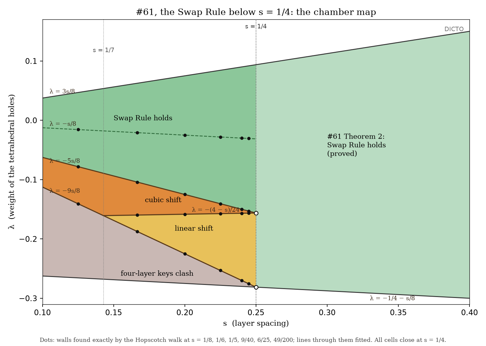
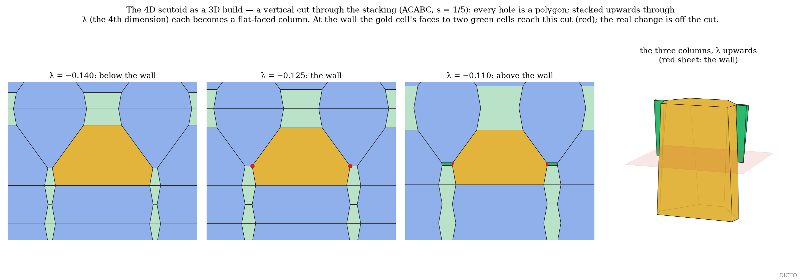

The exchanges of neighbours of Chapters 5 and 7 have a physical home: the close packing of spheres, where #61's Swap Rule says which pieces each layer holds. This chapter gives #104's proof of the rule below s = 1/4 and reads its walls as exchanges of neighbours one dimension up.
Setup (#61, The Swap Rule). Layers of balls (spacing 1 in a layer) are stacked in a word in A, B, C with layer distance d, d² = (2/3)s (s = 1: close packing). Between two layers lie octahedral and tetrahedral holes; space is divided among the holes by power distance |x − p|² − w, w = 0 for an octahedral hole and w = λ for a tetrahedral one, with λ in #61's range −1/4 − s/8 ≤ λ ≤ 3s/8 (for s ≤ 1/4). A layer is c if its two neighbours differ, h if they are equal. A hole's piece in the gap between layers k and k + 1 is keyed by its role (octahedral, or one of the two tetrahedral kinds) and the types of the four layers k − 1, k, k + 1, k + 2; the types of the two inner layers are (t | t′), the two outer ones the context. V(t | t′) is the piece's volume with the context held fixed. #61 proved V(c|h) + V(h|c) = V(c|c) + V(h|h) when s ≥ 1/4.
The four-layer condition. A piece's context is its role (octahedral, or one of the two tetrahedral kinds) together with the types, c or h, of the four layers k − 1, k, k + 1, k + 2 round its gap. A stacking satisfies the four-layer condition at (s, λ) when each of its pieces is determined, up to a motion, by its context. The six stackings below contain all sixteen contexts, and their pieces are computed directly; for any other stacking Theorem 9.1 assumes the condition. Below λ = −9s/8 it fails: a piece reaches two gaps.
Proof (exact, computer-assisted). s enters only the vertical metric, so every power-diagram plane has a normal linear in s and an offset linear in s and λ; for fixed s only the right-hand sides carry λ, so corners and slacks are affine in λ, and a slack is non-negative on a cell of the map iff it is on the cell's two bounding walls: one-variable rational functions of s. On each cell of the map, built at one sample point for the six words, every corner was re-solved symbolically over Q(s) and every plane's slack proved non-negative on the whole cell (Bernstein sign tests over the s-interval, exact root counting otherwise; 35,561,184 exact sign checks); the volumes and D(s, λ) agree with the closed forms as rational identities. Neighbourhood. The cells were built from all sites within squared distance 24 (every plane's slack proved non-negative on the whole cell). No farther site can cut a cell: for any point x of a hole's cell, the octahedral holes of the nearest gap form a triangular lattice of spacing 1 at vertical offset ≤ d/2, so the nearest of them, pk, has |x − pk|² ≤ 1/3 + 1/24 = 3/8, and hence |x − pi|² ≤ 3/8 + |λ| < 0.67: every cell lies within ρ < 0.82 of its site, and (√24 − 0.82)² − 0.82² > 15.9 exceeds every weight difference |λ| ≤ 0.29. The walls were first found exactly along λ (the Hopscotch walk: each wall is a root where a corner meets a plane) at six spacings. ∎
Domain. s in [1/8, 1/4], λ from −9s/8 to 3s/8 (from −(4 − s)/24 when s ≤ 1/7), the six stackings ABC, AC, ACBC, ACABC, ACBCAC, ACBABC, every site within squared distance 24; open: λ below −9s/8 and s below 1/8. Exact and floating-point steps. Floating point is used only to propose each cell's structure at one sample point; every corner is then re-solved over Q(s), every slack is a rational function, and every sign is decided exactly (Bernstein bounds over the s-interval, exact root counting otherwise). No floating-point step decides a sign; the closed forms are checked as rational identities. Environment. Python 3.14.4 with SymPy 1.14.0 (DomainMatrix over Q(s)), Ubuntu 26.04 Linux. Certificates. The five cell logs data/cells2-D24/{b, c1, c2, d1, d2}.txt in studies/2026-11-09-b1-walls (MD5 f08927c4…, f3bbe3cf…, be695d8f…, 2b7beddb…, 9b1832d0…), each ending "FINAL ok (cell X proved for all s in …, neighbourhood D² = 24)". Re-run. From a clean checkout: cd studies/2026-11-09-b1-walls/scripts && D2=24 python -u cells61.py; about 45 minutes with the five cells in parallel; it ends "FINAL ok". This was done on 11 November 2026 from a clean copy of the repository, and every cell log came out identical to the original apart from timings.

What happens at the walls. The λ-stack of the 3D power diagrams is a 4D cell complex; in a generic weight walk its 3D slices change by the 3D T1 moves of Chapter 7, Theorem 7.1′ for d = 5, one contact gained or one lost at a time. At #61's walls the lattice's central symmetry forces a loss and a gain onto one point: six cells meet there and the four exchanging holes lie in one plane with a common midpoint (a degenerate 4-4 flip, the rosette kind of event, not Chapter 7, Theorem 7.1's pure swap); in that plane the exchange is a 2D scutoid swap. At s = 1/5, summed over the six words' unit cells, the faces exchanged are: at −(4 − s)/24, 57 between octahedral holes in one layer for 57 between tetrahedral holes in one layer; at −5s/8, 21 between octahedral holes two layers apart for 21 tetrahedral; at −s/8, 126 for 126 between neighbouring layers; at −9s/8, 31 long octahedral contacts lost and 173 gained. The Swap Rule switches on at the moment the last octahedral contact across a whole layer lets go.
Each hole's power cell, stacked over λ in an interval [λa, λb], is a convex 4-polytope {(x, λ) : n·x ≤ b₀ + b₁λ, λa ≤ λ ≤ λb} whose 3D slices are the cells. We propose the name 4D scutoid for such a 4-cell whose 3D slices change neighbours at a wall where cells stop touching and others start. At s = 1/5, across the wall λ = −1/8, 25 holes (of the six words) have 4D cells with faces that end or begin exactly at the wall: the octahedral cells' faces towards octahedral holes two layers away end there, the tetrahedral cells' new faces begin there (Figure 5).

DICTO: #61 (the Swap Rule above s = 1/4); #104 Scutoid Tissues in Four Dimensions (Sections 2 and 3, Theorem 3, Figures 4–6); the B1 walls study (clean rerun of 11 November 2026). F. Aurenhammer, Power diagrams: properties, algorithms and applications, SIAM J. Comput. 16 (1987) 78–96, doi:10.1137/0216006.
Further reading. J. H. Conway and N. J. A. Sloane, Sphere Packings, Lattices and Groups, 3rd ed., Springer (1999); G. M. Ziegler, Lectures on Polytopes (1995), doi:10.1007/978-1-4613-8431-1.